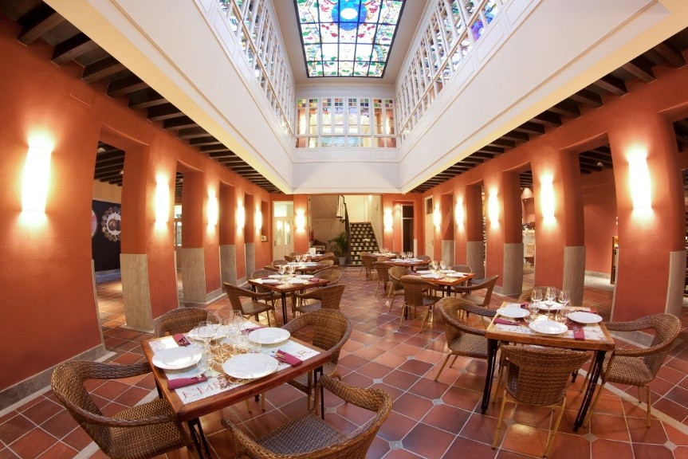
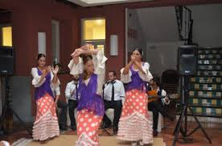
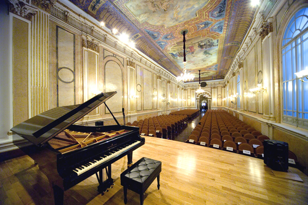
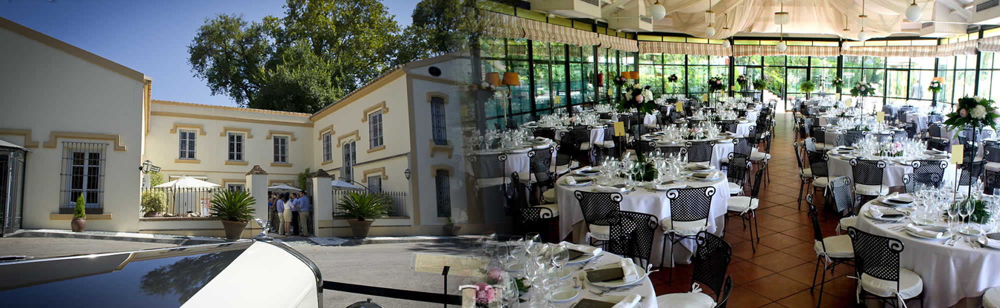
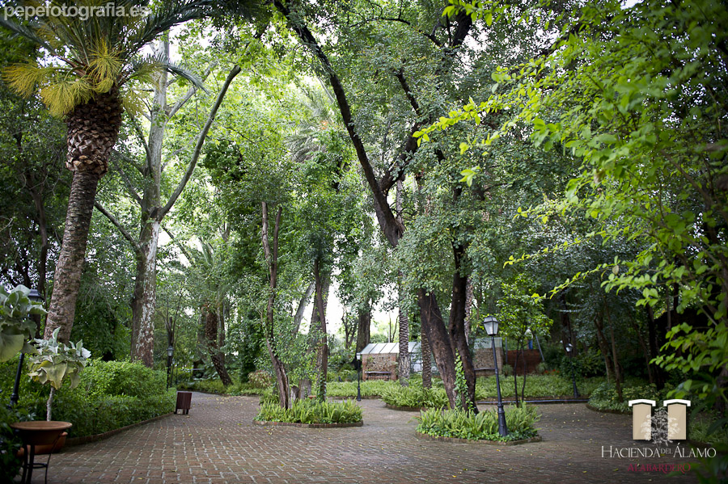

Social program
ISMIR 2015 will not only offer interesting papers, posters, tutorials, etc., it also aims at giving the participants an unforgettable stay.
The social programme will provide participants with an opportunity to relax after meetings, to experience Málaga, and to network with other ISMIR participants.
The social program includes:
| Monday, October 26 at 20:00 | Welcome Reception at "Vinoteca Museo Los Patios de Beatas" |
|---|---|
| Wednesday, October 28 at 18:00 | Live Flamenco Show & Concert at "Sala de Conciertos María Cristina" |
| Thursday, October 29 at 20:00 | Gala Dinner at "Hacienda del Alamo" & ISMIR 2015 Pandora Jam Session |
•
Welcome Reception (Monday, October 26, 20:00) at: Vinoteca Museo Los Patios de Beatas
Calle Beatas, 43. 29006 Málaga
Calle Beatas, 43. 29006 Málaga
DOWNLOAD A PDF MAP TO GET THERE

•
Flamenco Show & Concert (Wednesday, October 28, 18:00) at: Sala de Conciertos María
Cristina
Calle Marqués de Valdecañas, 2. 29008 Málaga
Calle Marqués de Valdecañas, 2. 29008 Málaga
DOWNLOAD A PDF MAP TO GET THERE
You can also download the ISMIR 2015 Concert Program with the Program Notes and the leaflet

• Gala Dinner (Thursday, October 29, 20:00) at :
Hacienda del Alamo
Cmo de Casabermeja, 130, 29014 Málaga
 Cmo de Casabermeja, 130, 29014 Málaga
